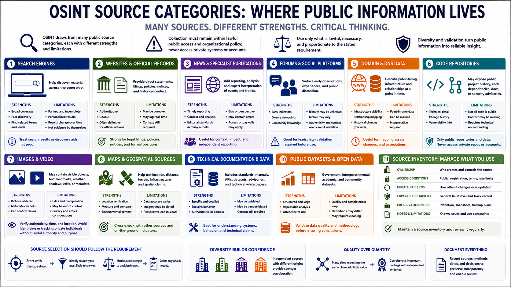

Sources of OSINT
Connecting to LMS... Progress: in progress

Narration
OSINT draws from many public source categories, each with different strengths and limitations. Search engines help discover material, but their results are ranked, incomplete, personalized, and subject to change. Analysts should treat search results as discovery aids rather than evidence by themselves.
Websites and official public records can provide direct statements, filings, policies, notices, and historical context. News organizations and specialist publications may add reporting and expert interpretation. Forums and social platforms can surface early observations, but identity, authenticity, motive, and context often require careful validation.
Domain and DNS data can help describe public-facing infrastructure and relationships at a point in time. Code repositories may expose public project history, dependencies, documentation, or security advisories. Collection must remain within lawful public access and organizational policy; public-source work never authorizes access to private repositories or accounts.
Images and video may contain visible objects, text, landmarks, weather, shadows, edits, or publication metadata. Maps and geospatial sources can help test location claims. Visual analysis should avoid identifying or tracking private individuals without lawful authority and a legitimate, proportionate purpose.
Source selection should follow the requirement. Official records may be strong for a legal filing, while direct technical documentation may be better for a software behavior. A social post may provide a lead but not enough support for a consequential judgment.
Maintain a source inventory that records ownership, access conditions, update patterns, expected reliability, and preservation needs. Diversity matters: independent sources with different origins provide stronger corroboration than many sites repeating the same original claim.